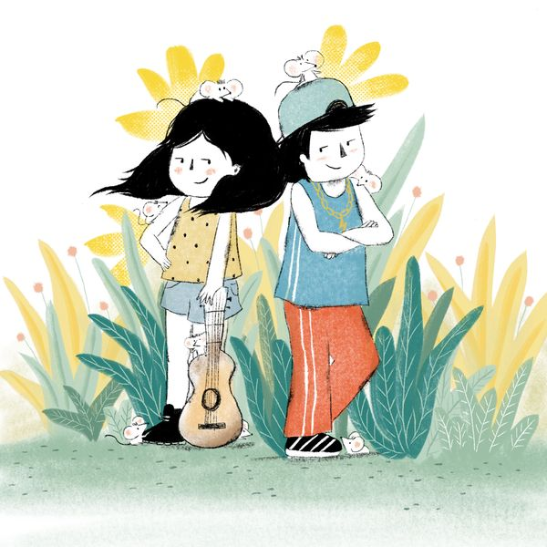

Ali, Mc Baba y los 40 ratones
Ep. 18 · 15 min · Podcast Cuentos Feroces
Cuando su papá reparte el campo entre los dos hermanos, la Ali quiere seguir con el sésamo y la guitarra mientras Humberto vende su parte, monta un estudio de grabación y se hace llamar MC Baba. La distancia entre ellos crece hasta que la Ali y cuarenta ratones arman un plan para sabotearle los equipos. El plan les sale bastante peor de lo previsto.
Prejuicios estéticos y géneros musicales · Hermanos que toman caminos distintos · Tradición y modernidad · Reparación del daño · Herencia y decisiones